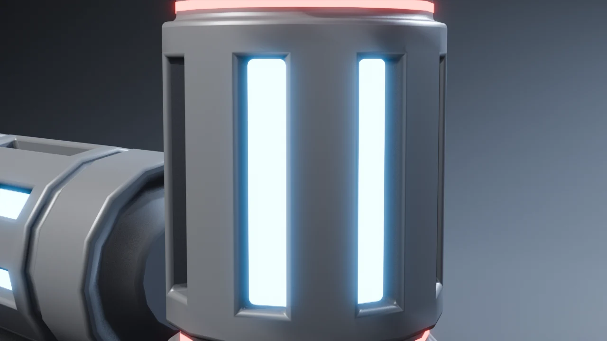
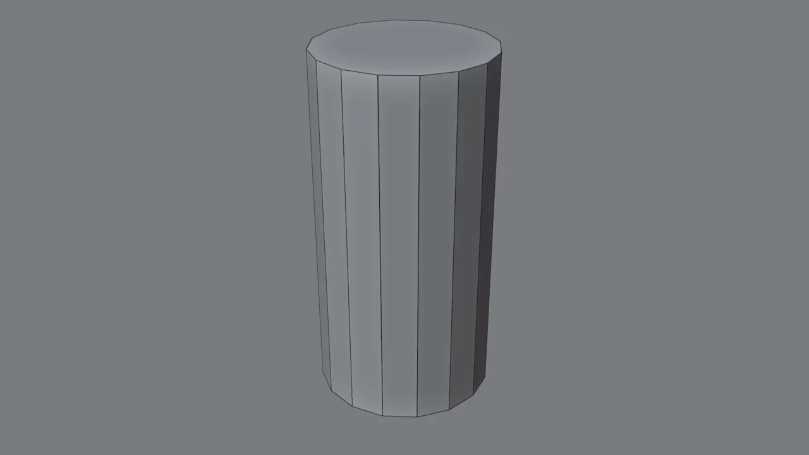
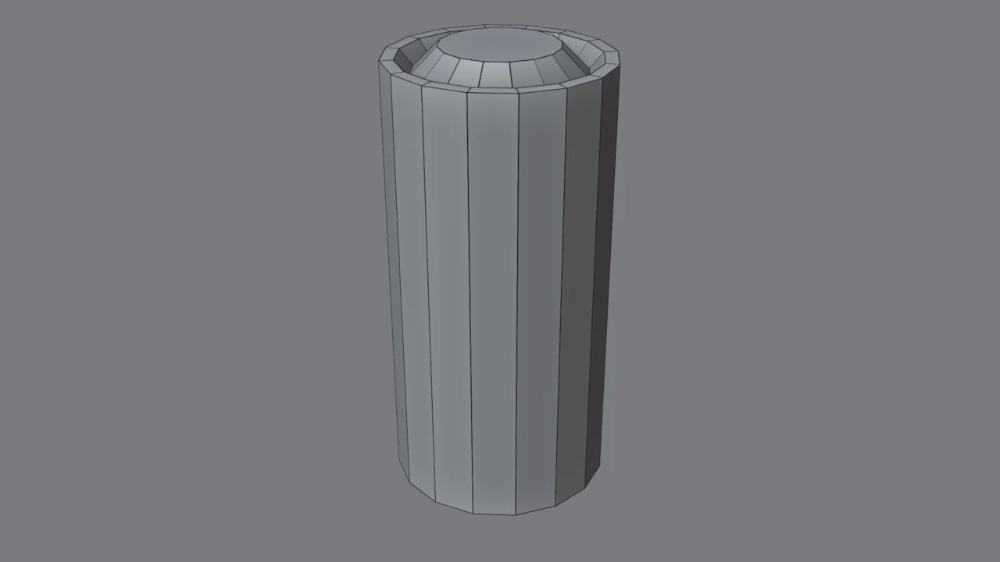
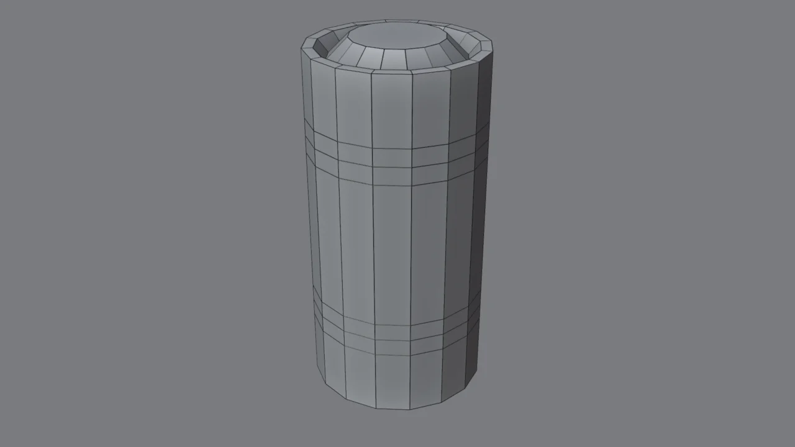
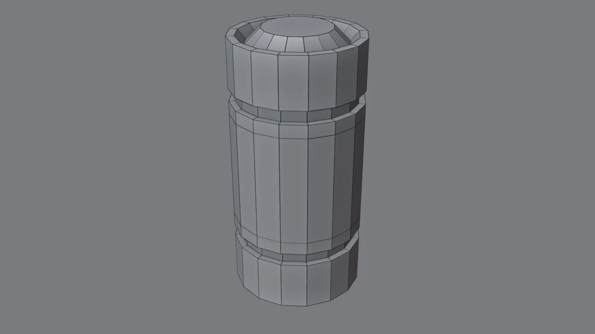
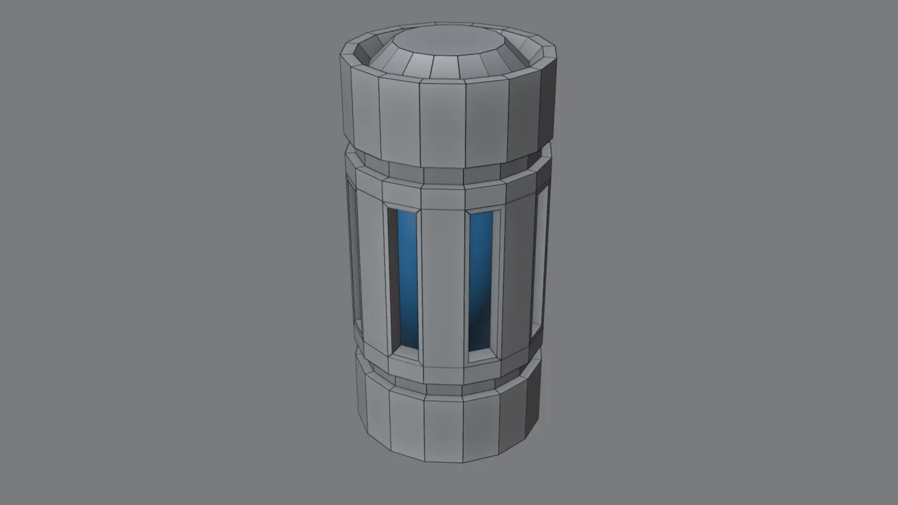
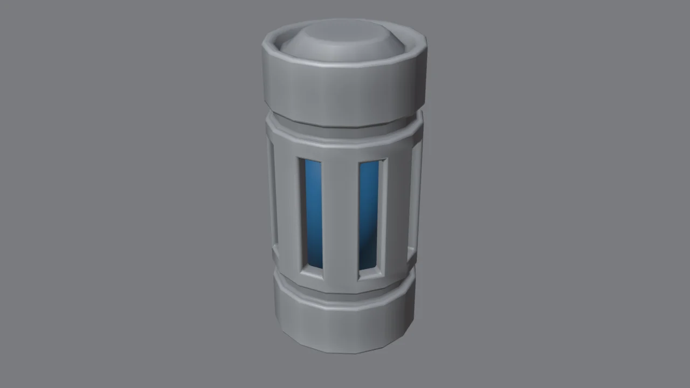
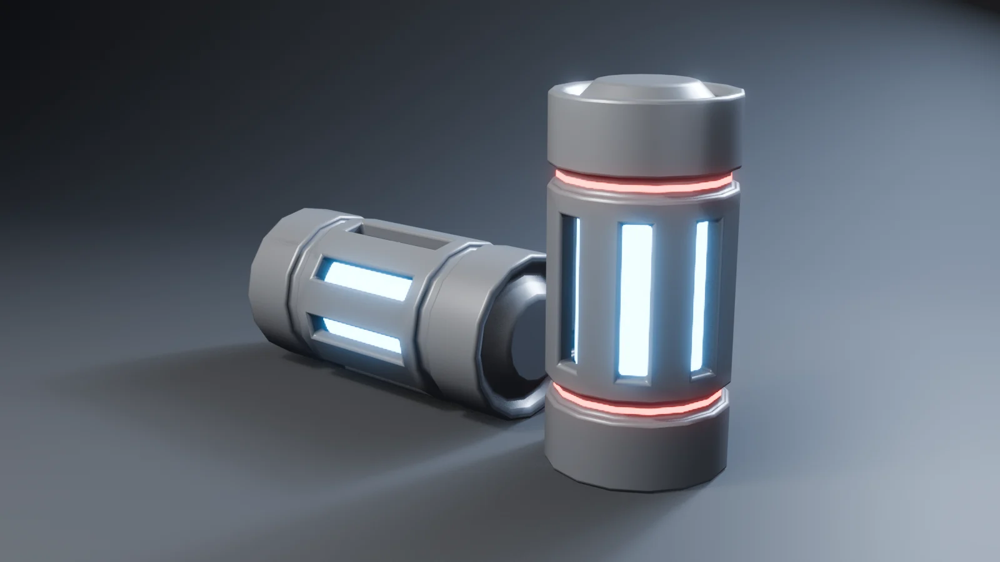

Lo que vas a forjar // objetivo

Fíjate en la parte trasera del mango del arma de tu referencia: hay una cápsula con un núcleo de energía. Es exactamente esta pieza. Aprenderás:
- Inset (I): crear un borde dentro de una cara. Es la herramienta reina del hard surface.
- Extrude (E, Alt+E): sacar o hundir geometría.
- Loop Cut (Ctrl+R): añadir cortes donde necesitas detalle.
- Modificador Bevel + Weighted Normal: el acabado que hace que parezca metal.
Gírala paso a paso // 3D
Este es el modelo real exportado desde Blender en cada fase. Pulsa los pasos, gíralo y activa Malla para ver la topología.
Antes de empezar: el modo edición // concepto
Todo el modelado ocurre en modo edición (Tab). Dentro tienes tres modos de selección:
Vértices
Puntos. Para ajustes finos de posición.
Aristas
Líneas. Para biselar bordes y deslizar cortes.
Caras
Superficies. Para Inset y Extrude: lo que más usarás hoy.
Escribe los números. Después de pulsar casi cualquier herramienta (G, S, I, E…) puedes teclear un valor y pulsar Enter. Es la diferencia entre «más o menos» y una pieza precisa. Si te equivocas, Ctrl+Z.
El cilindro base

- Abre tu
estudio_base.blendy guárdalo comocelda_energia.blend. - Shift+A → Mesh → Cylinder.
- Abajo a la izquierda aparece el panel Add Cylinder. Ábrelo y pon: Vertices 16, Radius 0.5 m y Depth 2 m.
- Súbelo para que apoye en el suelo: G Z
1Enter.
¿Por qué 16 lados? Son suficientes para que se lea redondo una vez biselado, y 16 se divide entre 2, 4 y 8. Gracias a eso podremos poner 8 ventanas simétricas. Elegir el número de lados pensando en el detalle que vendrá es un hábito clave en hard surface.
Las tapas: Inset en cadena

- Tab para el modo edición y 3 para caras. Haz clic en la tapa de arriba.
- I
0.06Enter: el borde exterior. - I
0.06Enter otra vez y luego E-0.07Enter: hundes el centro y queda un hueco. - I
0.12Enter y E0.12Enter: sale el terminal (el «polo» de la batería). - Orbita hacia abajo, selecciona la tapa inferior y repite: I 0.06, I 0.06 + E -0.07 y un último I 0.12 sin extruir.
El patrón Inset → Extrude es el «hola mundo» del hard surface: un borde, y luego hundir o sacar. Lo usarás para tornillos, botones, rejillas, toberas… Repítelo hasta que sea automático.
Loop Cuts donde irá el detalle

Necesitamos 6 cortes horizontales a estas alturas (Z): 1.62, 1.52, 1.42, 0.58, 0.48 y 0.38.
- Pasa el ratón por encima de una arista vertical del lateral y pulsa Ctrl+R: verás una línea amarilla horizontal.
- Clic izquierdo para crear el corte y luego clic derecho para que no se deslice.
- Pulsa N para abrir la barra lateral. En la pestaña Item, en Median → Z (con Global activado), escribe la altura exacta, por ejemplo
1.62. - Repite con las otras cinco alturas.
Por qué así: los cortes definen dónde puedes poner detalle. Sin ellos, no hay caras que hundir. En hard surface piensas primero dónde va cada corte y después lo cortas.
Ranuras: Extrude a lo largo de las normales

- Modo caras (3). Haz Alt+clic sobre una arista vertical de la franja estrecha de arriba (entre 1.52 y 1.62): se selecciona el anillo completo de caras.
- Haz Shift+Alt+clic en la franja equivalente de abajo (0.38–0.48) para añadirla.
- Alt+E → Extrude Faces Along Normals, escribe
-0.05y Enter.
Error típico: si usas E normal en un anillo, Blender extruye todo en una sola dirección y la ranura sale torcida. Along Normals empuja cada cara hacia su propio «dentro». Úsalo siempre en superficies curvas.
Ventanas al núcleo

- Alt+clic en una arista vertical de la franja ancha central para seleccionar sus 16 caras.
- Menú
Select → Checker Deselect: se deselecciona una cara sí y otra no, y te quedan 8. - I y otra vez I (Inset individual, cada cara por separado),
0.035Enter. - Alt+E → Extrude Individual Faces,
-0.09Enter: le das grosor a la pared. - X → Faces: borras el fondo y la ventana queda abierta.
- Tab para salir. Añade el núcleo: Shift+A → Cylinder con Vertices 24, Radius 0.34, Depth 0.9 y Location Z 1.
Pulsar I dos veces cambia entre Inset de región (un único borde alrededor de todo) e Inset individual (un borde por cara). Verás el modo en la barra superior mientras la herramienta está activa.
Acabado: Bevel + Weighted Normal
- En modo objeto, selecciona la celda. Clic derecho → Shade Smooth. Al principio se verá raro: lo arreglamos ahora.
- Propiedades → pestaña Modifiers (la llave inglesa) → Add Modifier → Generate → Bevel:
- Amount 0.02 m · Segments 3
- Limit Method: Angle a 30°: solo bisela las aristas marcadas, no las caras curvas.
- Desplegable Shading → Harden Normals ✓
- Add Modifier → Normals → Weighted Normal, con Keep Sharp ✓. Tiene que quedar debajo del Bevel.

Comprueba la escala. Si en algún momento escalaste en modo objeto, pulsa Ctrl+A → Scale antes de añadir el Bevel. Si no, el bisel sale deformado (lo verás con imágenes en el módulo 2).
Materiales rápidos // avance
Los materiales se ven a fondo en el módulo 8, pero con esto ya tienes el aspecto de la imagen final:
| Material | Ajustes (pestaña Material → New) |
|---|---|
| Blindaje (la celda) | Base Color gris claro · Metallic 0.35 · Roughness 0.38 |
| Núcleo | Desplegable Emission: Color azul (≈ #1473ff) · Strength 9 |
| Anillos rojos (opcional) | Un cilindro abierto y muy fino dentro de cada ranura con Emission roja · Strength 4–6 |
Pulsa Z → Rendered para verlo en vivo y F12 para el render final.

Reto: tu propia celda // checklist
Ahora hazla tuya. Repite la pieza desde cero sin mirar los pasos y cambia al menos dos cosas del diseño. Ideas:
- Una celda hexagonal (cilindro de 6 lados: muy de mecha).
- Ventanas en dos filas, o una ventana sí y dos no.
- Un conector para cable en el terminal (Inset + Extrude en miniatura).
- Proporciones distintas: corta y gorda, o larga como un tubo de refrigeración.